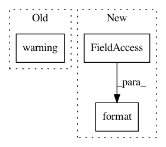

518427627be85a805a5ac97c787a0b0bd3489be9,python/ray/tune/utils/util.py,warn_if_slow,__exit__,#warn_if_slow#Any#Any#Any#,137
Before Change
if now - self.start > self.threshold and now - START_OF_TIME > 60.0:
self.too_slow = True
_duration = now - self.start
logger.warning(
f"The `{self.name}` operation took {_duration:.3f} s, "
"which may be a performance bottleneck.")
class Tee(object):
def __init__(self, stream1, stream2):
After Change
self.too_slow = True
duration = now - self.start
logger.warning(
self.message.format(name=self.name, duration=duration))
class Tee(object):
In pattern: SUPERPATTERN
Frequency: 3
Non-data size: 3
Instances
Project Name: ray-project/ray
Commit Name: 518427627be85a805a5ac97c787a0b0bd3489be9
Time: 2021-01-12
Author: krfricke@users.noreply.github.com
File Name: python/ray/tune/utils/util.py
Class Name: warn_if_slow
Method Name: __exit__
Project Name: AKSHAYUBHAT/DeepVideoAnalytics
Commit Name: 35e3714f3438f98ad396474b05dd9803fef7d78e
Time: 2017-02-19
Author: akshayubhat@gmail.com
File Name: dvalib/indexer.py
Class Name: AlexnetIndexer
Method Name: load
Project Name: NervanaSystems/coach
Commit Name: d6158a5cfc7374e44549302ce9e2df94d1522abf
Time: 2019-03-17
Author: gal.leibovich@intel.com
File Name: rl_coach/graph_managers/graph_manager.py
Class Name: GraphManager
Method Name: restore_checkpoint